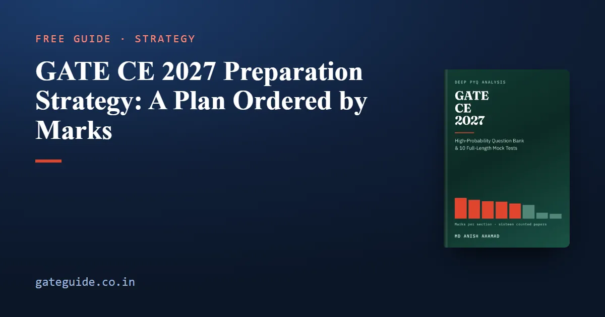

GATE CE 2027 Preparation Strategy: A Plan Ordered by Marks

A GATE CE 2027 preparation strategy should start from where the marks have actually landed. Across all sixteen GATE Civil Engineering papers from 2019 to 2026, Set 1 and Set 2 in each year, counted question by question against the official answer keys, Structural and Geotechnical Engineering carry 29 of the 85 technical marks between them. General Aptitude is exactly 15 marks in every paper. And 25 marks of that record sit on material the 2027 syllabus no longer names.
In this guide
This guide turns those counts into week shapes for three candidates: one with twenty weeks, one with eight and one with two.
Key takeaways
- Study the technical sections in order of counted marks: Structural, Geotechnical, then Mathematics with Water Resources, then Environmental, Transportation, and Geomatics with Construction last.
- General Aptitude needs its own slot from the first week. It is 15 marks in all sixteen papers, and nothing else on the paper is that certain.
- Twenty-nine phrases in the 2027 syllabus are new. Most have no past paper behind them — a few were examined under older wording, streamflow measurement in 2023 Set 2, Q.63, for one — so they need reading time every week.
- Twenty-five counted marks are on deleted material. Recognise those questions in practice papers and strike them out.
- The section order comes from counts. The week shapes are the author's judgement, and each is labelled as one.
What the plan is built on
Mean marks per paper across the sixteen counted papers, and the spread between each section's highest and lowest paper:
| Section | Mean marks | Spread |
|---|---|---|
| Structural Engineering | 15.1 | 7 |
| Geotechnical Engineering | 13.8 | 4 |
| Engineering Mathematics | 12.9 | 5 |
| Water Resources Engineering | 12.6 | 3 |
| Environmental Engineering | 11.1 | 5 |
| Transportation Engineering | 10.0 | 6 |
| Geomatics Engineering | 4.4 | 6 |
| Construction Materials and Management | 3.5 | 7 |
| Material the 2027 syllabus no longer names | 1.6 | 4 |
| General Aptitude | 15.0 | 0 |
Three consequences set the order of everything below.
The top two sections carry more than a third of the technical paper. On rounded means Structural is 15 and Geotechnical 14, which is 29 of 85. Add Engineering Mathematics and Water Resources and the top four carry 55 of the 85, or 54.4 on the unrounded means. A plan that reaches them late reaches most of the paper late.
General Aptitude has zero spread. Ten questions, five at one mark and five at two, in all sixteen papers. It is worth more than Geomatics and Construction combined, whose means add to 7.9.
The two small sections are erratic, not optional. Geomatics ran from 1 to 7 marks a paper and Construction from 0 to 7. Both have short, largely factual syllabi, so the marks per hour are high whenever the marks appear.
Order by marks, with one exception
Work the sections in the order of the table, not the order the syllabus prints them. Inside each section, start from the heaviest topic. Structural Analysis and energy methods drew 86 of Structural's 241 counted marks, 36 per cent, which is more than the whole of Geomatics managed across the sixteen papers (71).
Judgement: start with your weakest of the top four, not your strongest. The order decides which sections come early; the marks you do not yet have are the only ones left to gain.
One detail inside Structural deserves attention. Across 2019 Set 1 and 2019 Set 2, both set by IIT Madras, Concrete Structures drew 1 mark and Steel Structures 10: the lowest Concrete figure in the record, and by far the widest lead Steel has had, since in no other year did it lead by more than 2 marks. 2019 Set 2 had no Concrete Structures question at all. IIT Madras organises GATE 2027, as the organising institute guide explains. Two papers are a signal, not a law, and nothing here predicts a repeat. The cheap response is to prepare steel to the same standard as concrete.
The 20-week plan
Judgement: the week allocation below is the author's, reasoned from the means. It is not a count.
| Weeks | Main block | Notes |
|---|---|---|
| 1–3 | Structural Engineering | Steel to the same standard as concrete |
| 4–5 | Geotechnical Engineering | Includes sheet piles and ground improvement, both new |
| 6–8 | Engineering Mathematics and Water Resources | Maths rewards breadth: all six areas |
| 9 | Every newly named 2027 phrase, all sections | One dedicated reading week |
| 10 | Environmental Engineering | First full paper at the end of the week |
| 11 | Transportation Engineering | Read Transportation Planning in full |
| 12 | Geomatics, Construction Materials and Management | Syllabus first: Geomatics was rewritten |
| 13–18 | Full papers, each followed by an evening of diagnosis | Half-day revisit of the new phrases |
| 19–20 | Last fortnight | No new topics except the new phrases |
A learning week, as a concrete shape:
| Day | Work |
|---|---|
| 1–4 | New material, one topic a day, heaviest topic first |
| 5 | Practice questions on those four topics, timed loosely |
| 6 | One hour of General Aptitude, then last week's wrong answers attempted again cold |
| 7 | A timed mixed set of 25 questions across sections already learned, or rest |
Set aside a short reading slot each week for any newly named phrase in the section you are on. Week 9 gathers them all, but they should get reading time in every week rather than only a block. Keep an error log from day one, and file every wrong answer under one of four causes: misread the question, wrong formula, arithmetic slip, or simply not known. Each needs a different remedy, and only one of them is more practice.
The weekly General Aptitude hour is the best-evidenced trade in the plan. The General Aptitude preparation guide covers what the ten questions test.
The GATE CE 2027 book prints the topic table behind every section above, 274 questions across nine subject chapters, and a hundred-question priority list whose quota follows the paper's own section weights. See what the book contains.
The 8-week plan
Judgement: with eight weeks, cover every section thinly rather than half of them well.
| Weeks | Main block |
|---|---|
| 1–2 | Structural and Geotechnical, heaviest topics only |
| 3 | Engineering Mathematics, a thin pass over all six areas |
| 4 | Water Resources Engineering |
| 5 | Environmental and Transportation, including Transportation Planning |
| 6 | Geomatics, Construction, and a read-through of every new 2027 phrase |
| 7–8 | Full papers on the two-week pattern below |
Three sections repay this compressed treatment most. Environmental Engineering is the most formula-dense section relative to its weight, and its formulae are short, so it converts hours into marks faster than anything else. Engineering Mathematics spreads its marks over six areas, none much above a quarter of the section, so a thin pass over all six areas beats a deep pass over two. Structural Engineering carries the most marks, and they are far from evenly spread (Structural Analysis alone holds 86 of its 241), so read its topic table before its textbook. Keep the weekly General Aptitude hour throughout.
The 2-week plan
Start nothing new. Judgement: sit a full paper every second day and use the day between for its mistakes.
| Days | Work |
|---|---|
| 1, 3, 5, 7, 9, 11 | One full paper in a single three-hour sitting |
| 2, 4, 6, 8, 10, 12 | Diagnosis of the previous paper, then re-study of what it exposed |
| 13–14 | Formula sheet, error log, and the skip list below |
Score each paper section by section, never total against total. A section that is your weakest in every paper is a syllabus problem, not an exam-day problem. The marking rules for MCQ, MSQ and NAT are common to every GATE paper; the exam pattern and marking scheme guide sets them out, although its title says CSE.
Recognise the 25 off-syllabus marks and move on
When you work a pre-2027 paper, strike these questions out rather than solving them:
- Prestressed concrete, 14 marks: a two-mark question in each of 2020 Set 1, 2020 Set 2, 2021 Set 1, 2022 Set 2, 2024 Set 1, 2026 Set 1 and 2026 Set 2.
- Free vibration of an undamped single-degree-of-freedom system, 8 marks across four papers.
- Dynamic pile formulae, 2 marks, in 2019 Set 2.
- Remote sensing and GIS, 1 mark, in 2023 Set 1.
That averages 1.6 marks a paper and reaches 4 in 2022 Set 2. Striking them out does more than save an evening: it stops a deleted topic quietly returning to your revision because it keeps appearing in front of you.
Judgement: the risk of dropping them is small but not zero, because examiners occasionally set questions on material neither syllabus names. A candidate with time in hand loses nothing by an hour on prestressed concrete. A candidate short of time should spend that hour on the new phrases instead.
The reverse case matters as much. Transportation Planning, four-step travel demand modelling, drew zero marks in all 1,040 counted questions. That zero is not evidence examiners avoid it; the topic simply was not on the syllabus. It is now a named topic in a section averaging 10 marks a paper. Read it.
Before you fix the calendar
Exam dates, session allocation and the schedule for the Civil paper are set each year, so check the current notification on the official GATE 2027 website and in the GATE 2027 exam dates guide before you count your weeks. GATE Guide is independent and is not affiliated with IIT Madras, IISc or GATE.
Frequently asked questions
Which subject should I start GATE CE 2027 preparation with?
Structural Engineering, the largest technical section at a counted mean of 15.1 marks across the sixteen papers from 2019 to 2026. Geotechnical follows at 13.8, and together they carry 29 of the 85 technical marks. One exception, and it is a judgement rather than a count - if one of the top four sections is your weakest, start there instead.
How important is General Aptitude in GATE CE?
It was exactly 15 marks in all sixteen counted Civil papers, from ten questions, five at one mark and five at two. No technical section except Structural Engineering averages more. It is also the only block of the paper that never varied, which is why it deserves a fixed hour every week from the first week rather than the gaps between subjects.
Can I skip prestressed concrete for GATE CE 2027?
The 2027 syllabus no longer names it, and it carried 14 marks across seven of the sixteen counted papers. There is a fair counter-argument, because 2027 still names design and detailing of beams. A candidate short of time should skip it and read the newly named topics instead. A candidate with time in hand loses nothing by an hour on it.
Is two months enough to prepare for GATE CE 2027?
It is enough to turn half-learned sections into marks, not to learn the paper from nothing. Work each section's heaviest topics only, give Engineering Mathematics a thin pass over all six areas, keep a weekly General Aptitude hour, and spend the last two weeks on full papers scored section by section, with no new topics.
How should I prepare Transportation Planning for GATE CE 2027?
Read it from the syllabus and a standard text. Four-step travel demand modelling is new in 2027 and drew zero marks in all 1,040 counted questions, because it was not on the syllabus before. There is no past paper to practise and no established pattern, so reading time is the only preparation available. Give it a slot in your Transportation week.
Sources
- GATE 2027 official website (IIT Madras)
- GATE 2027 CE syllabus (IIT Madras, official PDF)
- GATE 2026 CE syllabus (IIT Guwahati, official PDF)
Dates, fees and the syllabus are set by the GATE 2027 organising institute and can change. Always confirm at gate2027.iitm.ac.in.